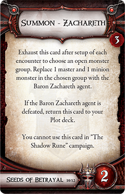
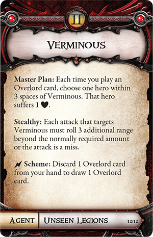

Class
Cards
Alric Farrow
Ardus Ix'Erebus
Ariad
Belthir
Bol'Goreth
Eliza Farrow
Gargan Mirklace
Kyndrithul
Merick Farrow
Queen Ariad
Raythen
Rylan Olliven
Serena
Skarn
Splig
Tristayne Olliven
Valyndra
Verminous
Zachareth
Zarihell
Goblin Uprising
Splig
Hybrid Loyalty
Belthir
Seeds of Betrayal
Zachareth

The Fallen Elite
Alric Farrow
Cursed by Power
Merick Farrow
Endless Thirst
Eliza Farrow
Dragon's Greed
Valyndra
Raging Infection
Bol'Goreth
Dark Illusions
Ariad
Tangled Web
Queen Ariad
Skulduggery
Raythen
Silent Protector
Serena
Inner Corruption
Rylan Olliven
Unstable Forces
Tristayne Olliven
Unseen Legions
Verminous

Burning Ambition
Gargan Mirklace
Twisted Soul
Skarn
First Legion
Ardus Ix'Erebus
Eternal Agony
Zarihell
Vital Essence
Kyndrithul
Donations Address
3Q6y5d5c43Lj9maDr8dcZyXUFqxPcbBiEv
v3.4.0.181129


 Donations Address
Donations Address
 Donations Address
Donations Address